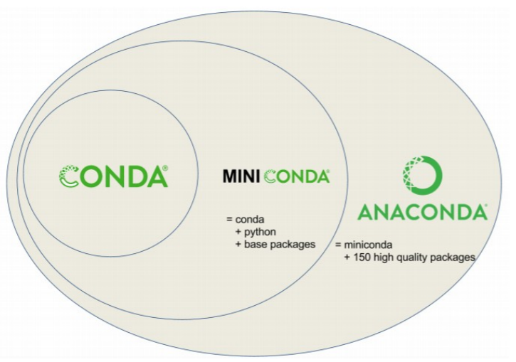
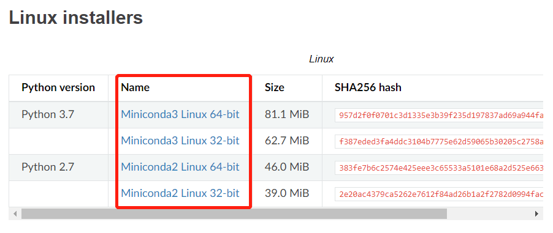
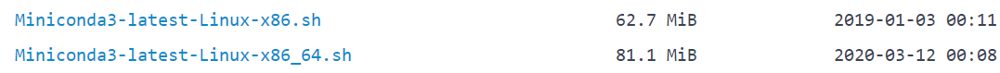
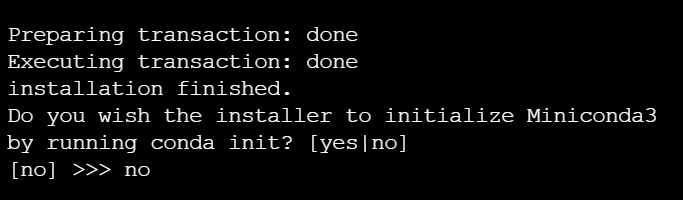
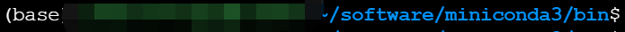
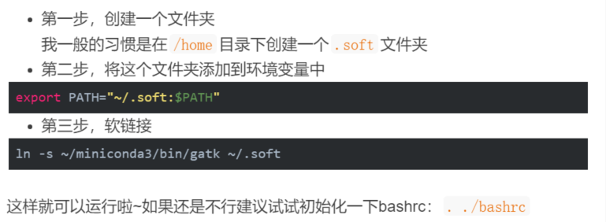
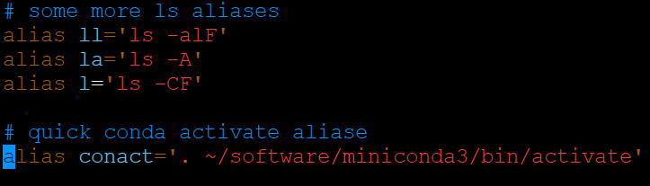
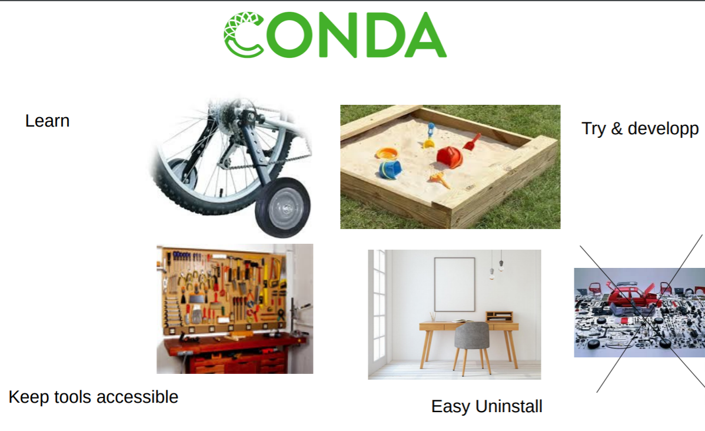

conda是什么
Anaconda是一个用于科学计算的Python发行版，支持Linux, Mac, Windows, 包含了众多流行的科学计算、数据分析的 Python 包。
本文要介绍的Miniconda是一个Anaconda的轻量级替代，默认只包含了python 和conda，但是可以通过pip和conda来安装所需要的包。
说白了conda就是一个软件包的管理库，可以方便地安装各种软件，当然也包括生信分析中常用的各种软件。

Miniconda的下载
Miniconda的下载有两种方式：

根据自己python的版本以及32/64位下载即可，右键“复制链接地址”
1 | wget -c https://repo.anaconda.com/miniconda/Miniconda3-latest-Linux-x86_64.sh |

下载这个最新版的即可
1 | $ wget -c https://mirrors.tuna.tsinghua.edu.cn/anaconda/miniconda/Miniconda3-latest-Linux-x86_64.sh |
Miniconda的安装
下载的文件Miniconda3-latest-Linux-x86_64.sh 是没有执行权限的，这里我们修改一下该文件的权限。
1 | $ chmod 777 Miniconda3-latest-Linux-x86_64.sh |
这里要注意的是不要将conda加入环境变量，避免环境变量被污染

Miniconda启动
因为我们没有将conda加入到环境变量中，所以我们需要手动启动conda
先切换到./miniconda3/bin，找到activate文件
1 | $ cd ~/software/miniconda3/bin/ |
如果activate文件是有执行权限x的话就无需修改权限，否则就用chmod 777使其可执行
之后，使用以下命令即可启用conda
1 | $ source ./activate |

启动后会在命令行首出现当前conda环境的标志(base)
添加channels
添加channels后，就可以下载该channel下的软件了，这边顺便把清华的镜像channels添加进去（国内用户使用快点）
1 | $ conda config --add channels bioconda |
查看已添加的channels
1 | $ conda config --get channels |

要注意的是最后添加的channels是最高优先级的。
conda常用操作
使用conda安装软件
conda 安装软件十分简单
1 | $ conda install fastqc |
以下是一些常用的生信软件
1 | conda install multiqc |
退出conda
1 | $ conda deactivate |
在conda环境下安装的软件在退出conda后无法使用，可以通过为软件创建软连接的方式解决：
“ 卖萌哥” 提供的解决方案：

环境操作
1 | $ conda create --name env python=2.7 ## 创建一个名为‘env’的python版本为2.7的环境 |
快速启动conda
由于我们没有把conda加入环境变量$PATH ，所以每次想使用conda时，都需要敲入$ source ./miniconda3/bin/activate 这样一长串命令。但我们也可以通过alias这个别名命令省点功夫。
我们需要在.bashrc文件中创建一个快速启动conda 的命令，其实就是相当于将我们启动conda的那一长串代码赋予了一个别名conact

注意千万不要修改
.bashrc文件中的其他内容！！！（在你对linux系统并不十分熟悉的时候，不建议你这样做）
.bashrc文件相当于一个系统配置文件，我们在这里设置别名命令就不用每次登录时都设置一遍。
总而言之，conda是一个十分好用的软件管理工具，最直接的当然是方便我们安装各种软件和工具包。但除此之外它提供的更加是一个简洁的开发环境，我们可以通过创建不同的环境来进行不同的分析操作，例如设置genome环境专门处理基因数据，设置一个proteome环境分析蛋白质组数据等等。不同环境的设置保证了我们分析的简洁性，避免了其间软件的相互干扰。

持续更新：conda常用命令
1 | ## 查看已安装命令 |
Ref：
完。